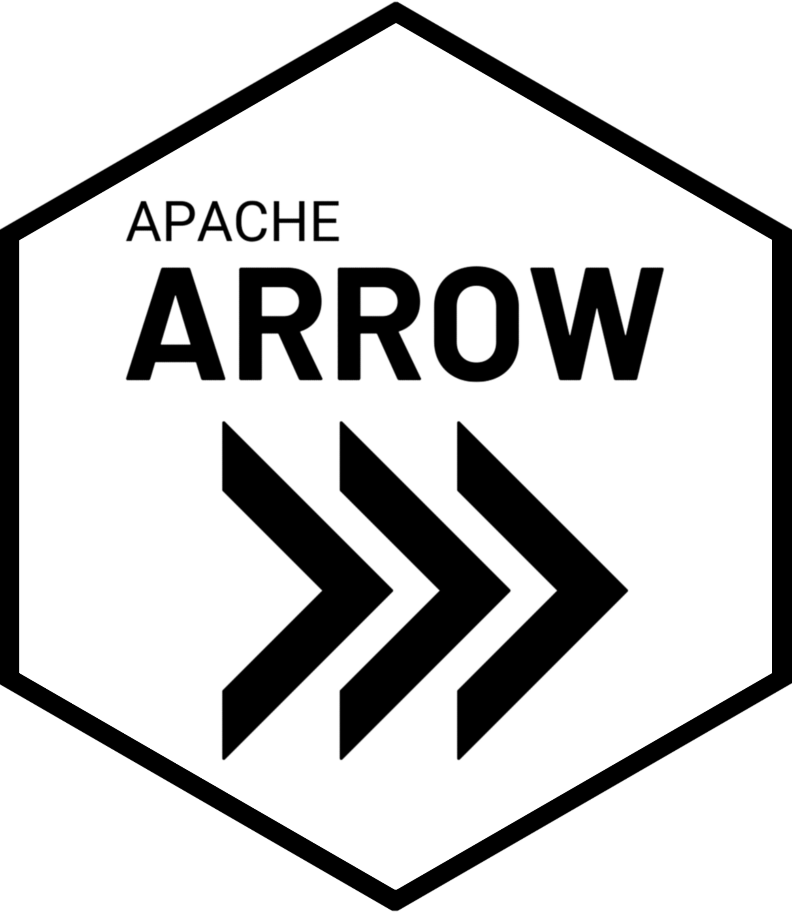

Data Engineering with Arrow
Data Engineering
.NORM Files
Formats

Arrow & File Formats
Slido Poll: Formats
Which file formats do you use most often?
- CSV (.csv)
- MS Excel (.xls and .xlsx)
- Parquet (.parquet)
- Something else
Seattle
Checkouts
Big CSV
Download the 9GB CSV file
arrow::open_dataset() with a CSV
library(arrow)
library(dplyr)
seattle_csv <- open_dataset(
sources = here::here("data/seattle-library-checkouts.csv"),
format = "csv"
)
seattle_csvFileSystemDataset with 1 csv file
UsageClass: string
CheckoutType: string
MaterialType: string
CheckoutYear: int64
CheckoutMonth: int64
Checkouts: int64
Title: string
ISBN: null
Creator: string
Subjects: string
Publisher: string
PublicationYear: stringüëÄ Glimpse
FileSystemDataset with 1 csv file
41,389,465 rows x 12 columns
$ UsageClass <string> "Physical", "Physical", "Digital", "Physical", "Physi…
$ CheckoutType <string> "Horizon", "Horizon", "OverDrive", "Horizon", "Horizo…
$ MaterialType <string> "BOOK", "BOOK", "EBOOK", "BOOK", "SOUNDDISC", "BOOK",…
$ CheckoutYear <int64> 2016, 2016, 2016, 2016, 2016, 2016, 2016, 2016, 2016,…
$ CheckoutMonth <int64> 6, 6, 6, 6, 6, 6, 6, 6, 6, 6, 6, 6, 6, 6, 6, 6, 6, 6,…
$ Checkouts <int64> 1, 1, 1, 1, 1, 1, 1, 1, 4, 1, 1, 2, 3, 2, 1, 3, 2, 3,…
$ Title <string> "Super rich : a guide to having it all / Russell Simm…
$ ISBN <null> NA, NA, NA, NA, NA, NA, NA, NA, NA, NA, NA, NA, NA, N…
$ Creator <string> "Simmons, Russell", "Barclay, James, 1965-", "Tim Par…
$ Subjects <string> "Self realization, Conduct of life, Attitude Psycholo…
$ Publisher <string> "Gotham Books,", "Pyr,", "Random House, Inc.", "Dial …
$ PublicationYear <string> "c2011.", "2010.", "2015", "2005.", "c2004.", "c2005.…Parsing the Metadata
Parsing the Metadata
Arrow scans üëÄ a few thousand rows of the file(s) to impute or ‚Äúguess‚Äù the data types
üìö arrow vs readr blog post: https://thisisnic.github.io/2022/11/21/type-inference-in-readr-and-arrow/
Parsers Are Not Always Right
Arrow Data Types
Arrow has a rich data type system, including direct analogs of many R data types
<dbl>==<double><chr>==<string>or<utf8><int>==<int32>
Arrow’s schema()
Let’s Control the Schema
seattle_csv <- open_dataset(
sources = here::here("data/seattle-library-checkouts.csv"),
format = "csv",
skip = 1,
schema = schema(
UsageClass = utf8(),
CheckoutType = utf8(),
MaterialType = utf8(),
CheckoutYear = int64(),
CheckoutMonth = int64(),
Checkouts = int64(),
Title = utf8(),
ISBN = string(), #utf8()
Creator = utf8(),
Subjects = utf8(),
Publisher = utf8(),
PublicationYear = utf8()
)
)
seattle_csvFileSystemDataset with 1 csv file
UsageClass: string
CheckoutType: string
MaterialType: string
CheckoutYear: int64
CheckoutMonth: int64
Checkouts: int64
Title: string
ISBN: string
Creator: string
Subjects: string
Publisher: string
PublicationYear: stringYour Turn
- The first few thousand rows of
ISBNare blank in the Seattle Checkouts CSV file. Read in the Seattle Checkouts CSV file withopen_dataset()and ensure the correct data type forISBNis<string>instead of the<null>interpreted by Arrow. - Once you have a
Datasetobject with the metadata you are after, count the number ofCheckoutsbyCheckoutYearand arrange the result byCheckoutYear.
9GB CSV file + arrow + dplyr
# A tibble: 18 × 2
CheckoutYear `sum(Checkouts)`
<int> <int>
1 2016 9021051
2 2022 7001989
3 2017 9231648
4 2018 9149176
5 2019 9199083
6 2020 6053717
7 2021 7361031
8 2005 3798685
9 2006 6599318
10 2007 7126627
11 2008 8438486
12 2009 9135167
13 2010 8608966
14 2011 8321732
15 2012 8163046
16 2013 9057096
17 2014 9136081
18 2015 90841799GB CSV file + arrow + dplyr
user system elapsed
10.870 0.901 10.596 42 million rows – not bad, but could be faster….
File Format: Apache Parquet

Parquet
- usually smaller than equivalent CSV file
- rich type system & stores the data type along with the data
- “column-oriented” == better performance over CSV’s row-by-row
- “row-chunked” == work on different parts of the file at the same time or skip some chunks all together
Parquet Files: “row-chunked”

Parquet Files: “row-chunked & column-oriented”

Writing to Parquet
Storage: Parquet vs CSV
[1] 4.424267Parquet about half the size of the CSV file on-disk üíæ
Your Turn
- Re-run the query counting the number of
CheckoutsbyCheckoutYearand arranging the result byCheckoutYear, this time using the Seattle Checkout data saved to disk as a single, Parquet file. Did you notice a difference in compute time?
4.5GB Parquet file + arrow + dplyr
open_dataset(seattle_parquet,
format = "parquet") |>
group_by(CheckoutYear) |>
summarise(sum(Checkouts)) |>
arrange(CheckoutYear) |>
collect() |>
system.time() user system elapsed
2.004 0.389 0.621 42 million rows – much better! But could be even faster….
File Storage:
Partitioning
Dividing data into smaller pieces, making it more easily accessible and manageable

Slido Poll: Partitioning?
Have you partitioned your data or used partitioned data before today?
- Yes
- No
- Not sure, the data engineers sort that out!
Art & Science of Partitioning
- avoid files < 20MB and > 2GB
- avoid > 10,000 files (ü§Ø)
- partition on variables used in
filter()
Rewriting the Data Again
What Did We “Engineer”?
seattle_parquet_part <- here::here("data/seattle-library-checkouts")
sizes <- tibble(
files = list.files(seattle_parquet_part, recursive = TRUE),
size_GB = file.size(file.path(seattle_parquet_part, files)) / 10**9
)
sizes# A tibble: 18 × 2
files size_GB
<chr> <dbl>
1 CheckoutYear=2005/part-0.parquet 0.115
2 CheckoutYear=2006/part-0.parquet 0.172
3 CheckoutYear=2007/part-0.parquet 0.186
4 CheckoutYear=2008/part-0.parquet 0.204
5 CheckoutYear=2009/part-0.parquet 0.224
6 CheckoutYear=2010/part-0.parquet 0.233
7 CheckoutYear=2011/part-0.parquet 0.250
8 CheckoutYear=2012/part-0.parquet 0.261
9 CheckoutYear=2013/part-0.parquet 0.282
10 CheckoutYear=2014/part-0.parquet 0.296
11 CheckoutYear=2015/part-0.parquet 0.308
12 CheckoutYear=2016/part-0.parquet 0.315
13 CheckoutYear=2017/part-0.parquet 0.319
14 CheckoutYear=2018/part-0.parquet 0.306
15 CheckoutYear=2019/part-0.parquet 0.303
16 CheckoutYear=2020/part-0.parquet 0.158
17 CheckoutYear=2021/part-0.parquet 0.240
18 CheckoutYear=2022/part-0.parquet 0.2524.5GB partitioned Parquet files + arrow + dplyr
seattle_parquet_part <- here::here("data/seattle-library-checkouts")
open_dataset(seattle_parquet_part,
format = "parquet") |>
group_by(CheckoutYear) |>
summarise(sum(Checkouts)) |>
collect() |>
system.time() user system elapsed
1.944 0.375 0.368 42 million rows – not too shabby!
Your Turn
Let’s write the Seattle Checkout CSV data to a multi-file dataset just one more time! This time, write the data partitioned by
CheckoutTypeas Parquet files.Now compare the compute time between our Parquet data partitioned by
CheckoutYearand our Parquet data partitioned byChekcoutTypewith a query of the total number of checkouts in September of 2019. Did you find a difference in compute time?
Partition Design
- Partitioning on variables commonly used in
filter()often faster - Number of partitions also important (Arrow reads the metadata of each file)
Performance Review: Single CSV
How long does it take to calculate the number of books checked out in each month of 2021?
open_dataset(
sources = here::here("data/seattle-library-checkouts.csv"),
format = "csv"
) |>
filter(CheckoutYear == 2021, MaterialType == "BOOK") |>
group_by(CheckoutMonth) |>
summarize(TotalCheckouts = sum(Checkouts)) |>
arrange(desc(CheckoutMonth)) |>
collect() |>
system.time() user system elapsed
12.153 1.213 11.584 Performance Review: Partitioned Parquet
How long does it take to calculate the number of books checked out in each month of 2021?
open_dataset(here::here("data/seattle-library-checkouts"),
format = "parquet") |>
filter(CheckoutYear == 2021, MaterialType == "BOOK") |>
group_by(CheckoutMonth) |>
summarize(TotalCheckouts = sum(Checkouts)) |>
arrange(desc(CheckoutMonth)) |>
collect() |>
system.time() user system elapsed
0.283 0.045 0.075 Engineering Data Tips for Improved Storage & Performance
- consider “column-oriented” file formats like Parquet
- consider partitioning, experiment to get an appropriate partition design üóÇÔ∏è
- watch your schemas üëÄ
R for Data Science (2e)

